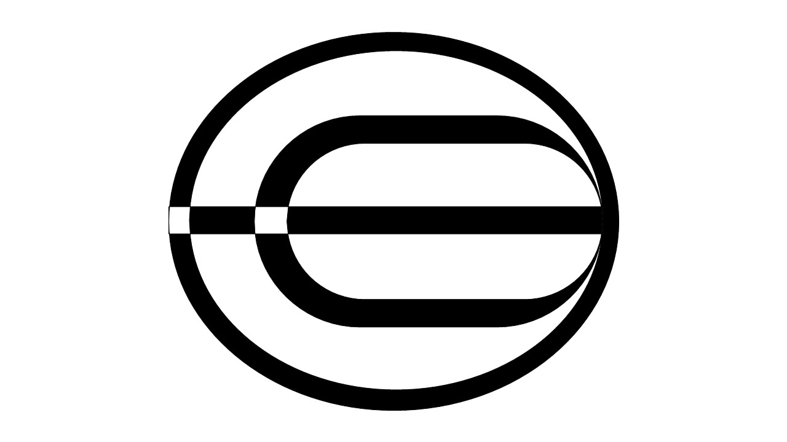

Rates Update:@2024
Worldcoin like any other digital coin is experiencing immense fluactuations in its value as at 2024.
Worldcoin rates are expected to shoot in the near coming months and we believe we are going to hold one of the most valuable coins as far as cryptocurrency is concerned.
We encourage buyers at this point to make more purchasese and trade the coins with an intent of a promising future
.
For any querries pertaining legitimate worldcoin traders and brokers feel free to contact one of our affiliate in the below provided whatsApp contact or any querries partaining lost worldcoin accounts.
[Chat with us on WhatsApp
] for further assistance.
This is just worldcoin's updates tunnel, for more official and real trading feel free to visit your official worldcoin app!